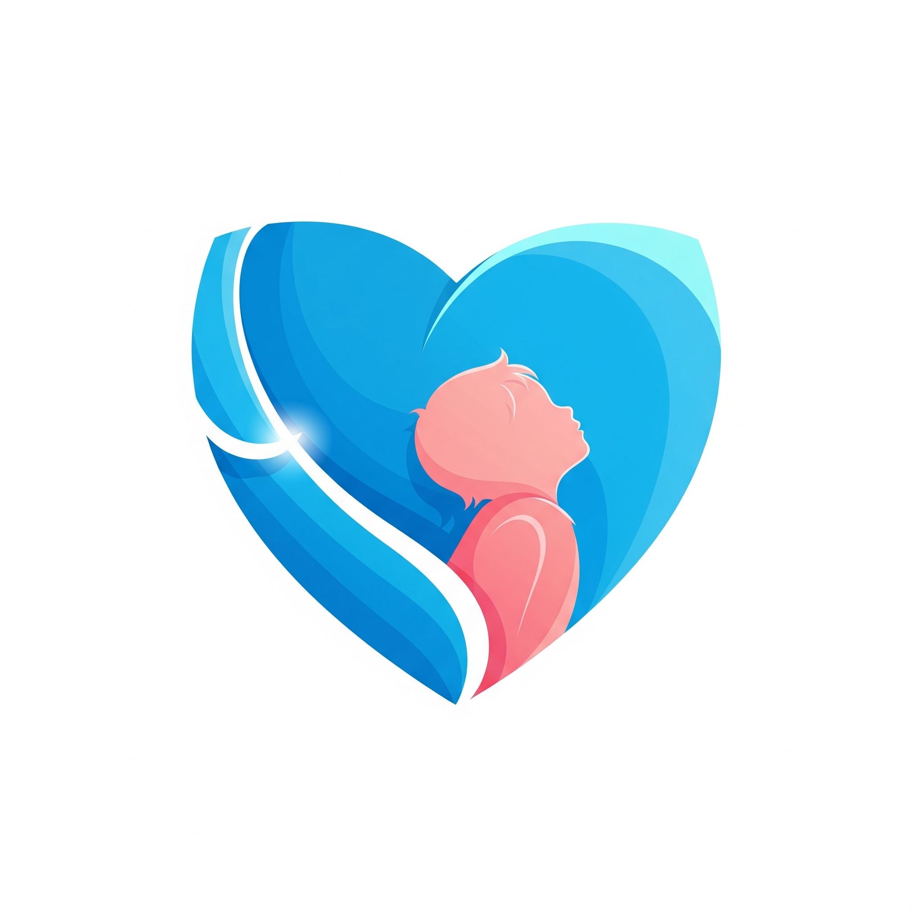

Envíanos correo a cualquier hora y te atenderemos lo más pronto posible:
Recuerda en tu solicitud mencionar tu correo electrónico con el que te registraste y tu nombre completo.
En Docentes con Causa, hacemos que tu trabajo trascienda a los más necesitados.
Cada 3 meses el CEO de Docentes con Causa, emite un cheque para que un docente elegido al azar lleve en persona la donación, puedes revisar las evidencias en el apartado de "Evidencias".
Por supuesto, puedes enviar correo a docentesconcausaedtech@gmail.com y nos pondremos en contacto contigo.
Puedes adquirir más créditos de planeaciones solicitándolas en Servicio al Cliente por una módica cantidad o actualizar tu plan de suscripción para aumentar el número mensual disponible.
Nuestra IA crea planeaciones basadas en tus selecciones (grado, campo formativo, etc.) siguiendo la metodología de la Nueva Escuela Mexicana aplicando tecnología avanzada.
Puedes cancelar tu suscripción comunicándote por correo, mandando un mensaje de WhatsApp o en tu panel de administrador "Cuando esté habilitado".
Puedes solicitar tu factura por medio de nuestro correo a "soporte@docentesconcausa.com" junto con tus datos fiscales correspondientes.